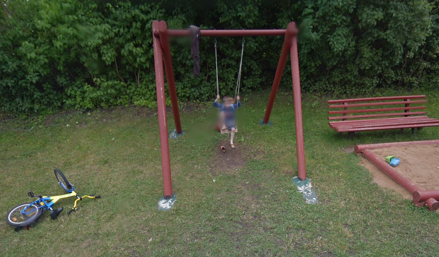

Nojka Slapta
Iš kur atsirado Slapta? Niekas nežino, tiesiog jis atsirado. Visa likusi informaciją apie jį yra paslaptis. Gal net kas nors pagalvotų, jog jis toks juokingas, kad jį kopijuotų.
Ką jis veikia?
Jis tiesiog egzistuoja, šoka, gyvena. Jis yra labai juokingas, per juokingas kiti net sakytų.
Kas jo laukia?
Jo laukia plagiatai, kurie niekada nesustos, kol negaus tiek pagarbos, kiek jis pats.
Kas klausė?
Nežinau, ką įdėti, tai va, žiūrėkit
 Mane pagavo